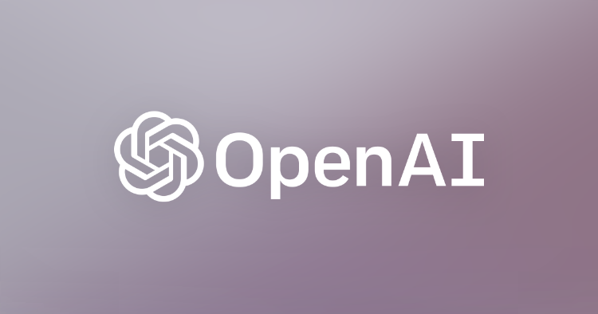

Microcredentials & Badges
This page highlights compact credentials and focused training across emerging tools and technical disciplines. It features a growing collection of vendor-issued and platform-based microcredentials reflecting diverse technical exploration and ongoing development.
OpenAI – ChatGPT Prompt Engineering for Developers
Earned May 2025

Issued by OpenAI
This microcredential from OpenAI introduces foundational techniques in prompt engineering for large language models. Topics included prompt structure, role prompting, token control, iterative refinement, and API-based interaction.
- Designed clear, goal-oriented prompts for GPT models
- Explored few-shot and role-based prompting strategies
- Practiced prompt tuning and model response control